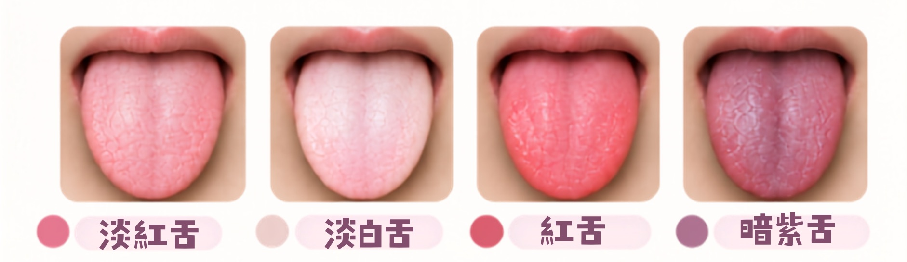
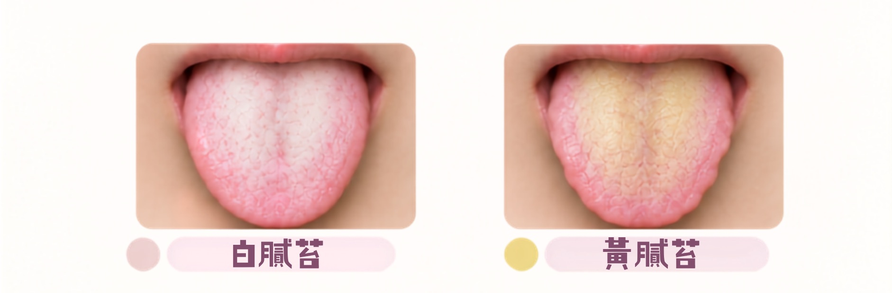
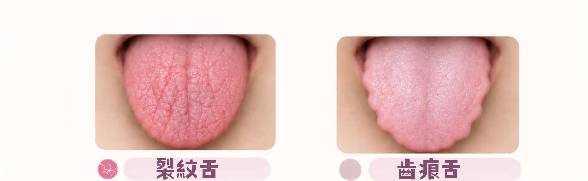

刷牙時看一眼舌頭，是不少人平日就有的習慣，但舌色偏白、舌苔變厚，甚至舌邊出現一排牙齒印，這些變化究竟代表什麼？中醫望、聞、問、切四診之中，望舌是最容易自己在家觀察的一環。以下從舌色、舌苔到舌頭形狀，逐一拆解常見的舌象訊號。
什麼是舌診？中醫望診的重要一環
舌頭透過經絡與臟腑相連，健康的舌象一般為舌色淡紅、舌苔薄白且分布均勻。中醫透過觀察舌色與舌苔的形態，可以粗略估計身體的血液循環與體質強弱等傾向，但舌診從來不是單獨使用的診斷方法，臨床上會配合問診與脈診等一併判斷。
舌頭的狀態也很容易受外在因素影響，例如剛睡醒、飲食染色，甚至天氣冷熱，都可能令舌象出現短暫變化。這也是為什麼下文會特別談到，日常觀察舌象時有哪些細節需要留意。
舌頭顏色代表什麼？四種常見舌色解讀
舌色是望舌時最先留意的部分，反映的是身體氣血與寒熱的大致傾向。
| 舌色 | 可能反映 | 常見情況 |
|---|---|---|
| 淡紅色（略帶光澤） | 氣血調和 | 一般視為健康舌色 |
| 淡白色 | 氣血不足或體質偏寒 | 較常見於容易疲倦、手腳冰冷者 |
| 紅色（偏鮮紅） | 體內熱氣偏盛 | 可能伴口乾、容易上火 |
| 暗紫色（或帶瘀斑） | 血行不暢、血瘀 | 可能伴刺痛或固定痛點 |

淡紅色：多屬健康舌色
舌色淡紅、帶有自然光澤，是中醫認為氣血調和、臟腑功能運作正常的表現，屬於一般人最常見也最理想的舌色。
初步生活建議：日常只需維持規律作息與均衡飲食，不必特別調整。
淡白色：氣血不足的訊號
舌色偏淡甚至泛白，中醫多歸因於氣血不足，或身體感受寒氣，常見於容易疲倦、面色偏白、手腳容易冰冷的人。
初步生活建議：飲食上可減少生冷食物，適量增加溫熱、易消化的食材，並留意睡眠是否充足。
紅色：體內熱氣偏盛
舌色偏紅甚至呈鮮紅色，多反映體內熱氣較盛、臟腑功能偏亢進，這類人有時會同時感到口乾、容易煩躁或上火。
初步生活建議：飲食宜清淡，減少辛辣、油炸及刺激性食物，並留意睡眠與情緒是否穩定。
暗紫色：血瘀的警示
舌色深紅甚至偏暗紫，並帶有瘀斑，中醫多視為體內有瘀血的表現。若同時伴隨心口悶痛或其他部位持續不適，應盡快求醫檢查，不宜單純視為體質問題處理。
初步生活建議：日常可維持適度活動、避免久坐不動，並注意身體保暖；若有明顯不適，仍應以及早求醫為優先。
舌苔看什麼？白膩苔與黃膩苔的分別
舌苔的顏色與厚薄，是中醫判斷體內濕氣與寒熱的重要依據。苔色越黃，一般代表熱象越明顯；苔質越厚越膩，則多與痰濕或消化狀況有關。
| 舌苔 | 常見成因 | 可能伴隨表現 |
|---|---|---|
| 白膩苔 | 多與體內濕氣偏重、痰濕內停有關 | 身體較沉重、容易疲倦、食慾欠佳 |
| 黃膩苔 | 多與濕熱有關 | 頭昏、胸悶、口氣較重、大便黏膩 |

白膩苔：多與痰濕有關
舌苔白厚、質地黏膩如漿糊狀，中醫多視為體內濕氣偏重、脾胃運化水濕的能力較弱，這類人常伴隨身體沉重、容易疲倦、食慾不振等表現。
初步生活建議：飲食宜清淡，減少甜食、油膩與生冷食物，適量運動有助於改善痰濕體質。
黃膩苔：多與濕熱有關
在白膩苔的基礎上，若舌苔轉為黃色，中醫多判斷為濕與熱同時存在，即「濕熱」。這類人除了舌苔厚膩，還常見頭昏、胸悶、沒胃口、大便黏膩等症狀。
初步生活建議：建議減少燒烤、油炸與辛辣食物，多攝取新鮮蔬果，並保持充足水分。
除了顏色與厚薄，舌苔太厚、太薄，甚至完全沒有舌苔，同樣有參考意義：舌苔過厚多代表病邪較盛或消化不良；舌面長期沒有舌苔，中醫則多視為陰虛較嚴重的表現，若同時伴隨深裂紋，代表情況可能較為明顯，值得留意。
舌頭形狀藏著什麼訊息？裂紋舌與齒痕舌
除了顏色與舌苔，舌頭的形狀與邊緣狀態，同樣是中醫望舌時的觀察重點。
| 舌形 | 特徵 | 常見對應體質 |
|---|---|---|
| 裂紋舌 | 舌面出現深淺不一的裂痕 | 多與陰虛或氣虛有關 |
| 齒痕舌 | 舌頭邊緣出現鋸齒狀牙印 | 多與脾虛或氣虛有關 |

裂紋舌：多與陰虛或氣虛有關
裂紋舌多見於陰虛熱盛的體質，若舌色偏紅絳而乾裂，多屬熱盛傷陰；若舌色偏淡白而裂，則較常與血虛或津液不足有關。判斷時還需留意舌苔的乾濕：舌苔乾燥而裂，多屬熱盛傷津；舌苔有津液但仍有裂紋，則較常見於氣虛體質。
初步生活建議：日常可留意睡眠是否充足、水分攝取是否足夠，並避免長期熬夜或過度耗神。
齒痕舌：多與脾虛或氣虛有關
舌頭邊緣出現一排因牙齒擠壓形成的鋸齒狀痕跡，稱為齒痕舌，中醫多歸因於脾虛或氣虛，運化水濕能力較弱。若舌體同時偏胖大並帶齒痕，多代表脾虛兼有濕氣偏重的情況，這類體質的人常見身形偏浮腫、活動量偏低、容易疲倦。
初步生活建議：飲食建議定時定量，避免生冷與難消化食物，並可搭配適量運動改善脾虛體質。
日常怎麼自我觀察舌象？
想在家自我觀察舌象，掌握以下幾個細節，判斷會更準確：
- 選在早上刷牙前、光線充足自然光下觀察，避免燈光偏黃影響判斷。
- 觀察前半小時避免飲用咖啡、濃茶或進食深色食物，以免暫時染色舌苔。
- 觀察順序建議先看舌色，再看舌苔，最後留意舌頭形狀與邊緣。
- 自然平放觀察即可，不必刻意用力伸長舌頭，以免舌色因用力而暫時改變。
- 與其只看單日狀態，連續觀察數天的變化趨勢更有參考價值，因為舌象容易受睡眠與飲食影響而短暫波動。
舌象只是參考，什麼情況要留意
舌頭外觀只是其中一項參考，需要配合睡眠、食慾、消化、二便與月經等整體狀況一併判斷，不宜單憑舌象自行斷症或用藥。以下情況建議及早求醫：
- 舌色持續暗紫，並伴隨心口悶痛或其他部位持續不適。
- 舌苔短時間內由薄轉厚、由白轉黃，並伴隨發燒、口苦等症狀。
- 舌面長期沒有舌苔、乾裂情況加深，或整體狀態持續轉差。
- 舌頭出現不明潰瘍，超過兩星期仍未癒合。
- 想根據體質作中藥或食療調理，但自行判斷後仍感疑惑不確定。
中醫辨證講求「四診合參」，即望、聞、問、切四種方法一併考慮，舌象只是其中一部分，實際體質判斷建議由註冊中醫師面診評估。
常見問題
舌苔可以先刷掉，再給醫師看嗎？
不建議。刷牙時順道刮走舌苔，或看診前特地清潔舌面，都會令醫師難以判斷真實舌象，建議看診前保持自然狀態即可。
早上起床舌苔特別厚，是不是有病？
不一定。剛睡醒時口水分泌較少、口腔活動量低，舌苔看起來容易偏厚，可以先漱口，再觀察是否持續偏厚。若長期偏厚且伴隨其他不適，才需要多加留意。
舌頭顏色會被食物或飲品影響嗎？
會。咖啡、濃茶、深色糖果等都可能暫時令舌苔染色，因此觀察舌象或求診前，建議避免進食有色食物或飲品，減少判斷上的誤差。
舌診準確嗎？可以只靠看舌頭判斷體質嗎？
舌診是中醫望診的一部分，能反映身體大致傾向，但中醫診斷講求「四診合參」，不會只憑舌象下判斷。建議由註冊中醫師結合整體問診與脈診評估，較為穩妥。
齒痕舌一定代表脾虛嗎？
多數情況下齒痕舌與脾虛或氣虛有關，但仍需配合舌苔厚薄與其他症狀綜合判斷，例如是否同時舌體胖大、容易疲倦、大便偏軟等，單憑齒痕未必能完全確定體質。
結語
舌頭是中醫望診中最容易自己觀察的一環，從舌色、舌苔到舌頭形狀，都能反映身體氣血與寒熱的大致傾向。與其糾結單一天的舌象變化，不如養成定期觀察的習慣，留意整體趨勢是否穩定。
如果想更有系統地了解自己的體質，可以先完成中醫體質問卷，再視乎需要預約醫師詳細望聞問切，制定個人化的調理方向。
參考資料4 項
- Jiang B, Liang X, Chen Y, et al. Integrating next-generation sequencing and traditional tongue diagnosis to determine tongue coating microbiome. Scientific Reports. 2012;2:936.（研究論文，白膩苔／黃膩苔分別對應中醫寒證、熱證的微生物組差異）https://doi.org/10.1038/srep00936
- Wang ZC, Zhang SP, Yuen PC, et al. Intra-Rater and Inter-Rater Reliability of Tongue Coating Diagnosis in Traditional Chinese Medicine Using Smartphones: Quasi-Delphi Study. JMIR mHealth and uHealth. 2020;8(7):e16018.（研究論文，說明舌苔觀察容易受角度、光線等因素影響，需標準化評估）https://doi.org/10.2196/16018
- 台灣衛生福利部中醫藥司：〈望舌〉。https://dep.mohw.gov.tw/DOCMAP/cp-772-5723-108.html
- 馬建中：《中醫診斷學（新編版）》。台北：正中書局，2017。第二篇．舌部：舌質與舌苔辨證分型。ISBN 978-957-09-1955-4

關於作者
胡佩珊中醫師，香港註冊中醫師（註冊編號：008823），專注女性健康及產前產後調理，善於結合中醫辨證與現代醫學知識，為病人制定個人化治療方案。
本文內容僅供健康教育參考，不構成醫療建議，亦不能取代註冊醫師或中醫師的診斷與治療。若您出現急性或嚴重症狀，請立即求醫。撰文：胡佩珊中醫師（香港中醫藥管理委員會註冊中醫師，註冊編號：008823）。